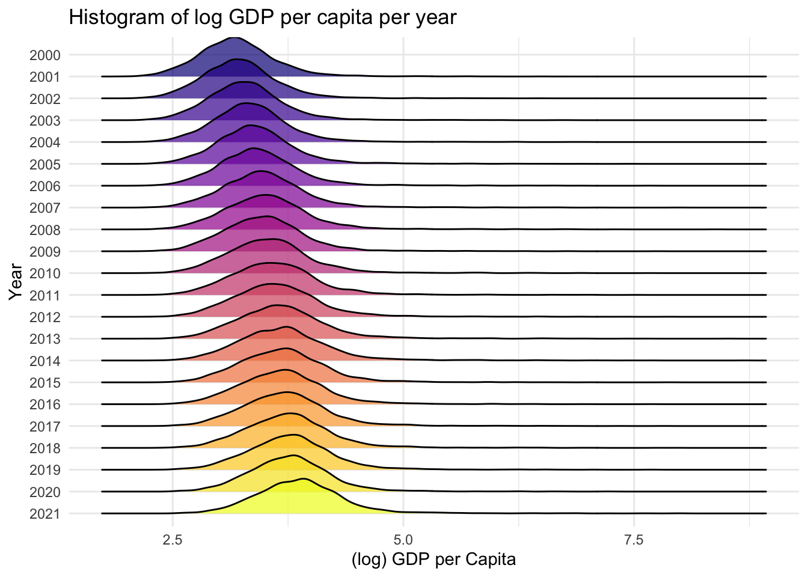
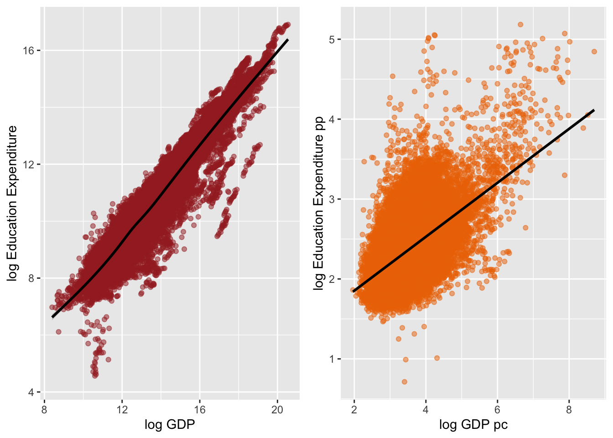

Descriptive Analysis & Preliminary Results
Introduction
The following document summarises the progress made thus far on Chapter 1: Local Fiscal Risks of Decarbonisation of my DPhil. The work aims to pursue a better understanding of how industrial transformation impacts local well-being. From an original interest in looking at all aspects of local public finance, the project has narrowed to focus on expenditure on public education and its connection to industrial prosperity and transformation.
Below, I provide some descriptive statistics and figures about the data, some preliminary regression tests of the significance of various GDP control variables, and some regression results using a standard TWFE model (with and without state-level trends) and coal mining activity as instruments for property taxes and GDP.
The main research question is: How does industrial transformation/activity impact county-level expenditure on public education?
Conclusion: I do not yet feel confident in any of the results below but hopefully these steps can help orient the next phase of analysis (ideally moving on to consider oil and gas industry treatment variables as well or treatments that proxy “industrial transformation” in a more general sense).
Data
All data used is reported annually at the county-level. Therefore, no time-invariant variables are included (apart from the State in which a county is in, which is made time-variant through the inclusion of a state-level trend in various models).
Expenditure and Revenue: The dependent variables of interest come from Willamette University’s Government Finance Database. The data includes county-level revenue and expenditure on public education including disaggregated values by revenue source (federal, state, or other intergovernmental revenue) and expenditure item (lunches, wages, debt). All values are reported in current US dollars. The data for property taxes collected used in regressions below also come from this dataset. Expenditure on vocational training and from Educational Service Agencies (ESAs) are also sourced from this dataset. The challenge of accounting for ESAs are shown in KR2 section below.
GDP Controls: US Bureau of Economic Analysis. Values are also reported in current US dollars (real GDP values exist). The controls used in the below are total, private industry, and oil, gas, mining & quarrying county-level GDP.
Population controls: US Census Bureau.
Coal mine activity and production levels: Mine Safety and Health Administration
Descriptive Statistics
The below summary table displays descriptive statistics for all indicators used in regression results below.
All values for total enrollment, revenue, taxes, expenditure are in thousand USD. Values for GDP are reported in million USD. Values for population are reported in thousands.
| Statistic | N | Mean | St. Dev. | Min | Max |
| esa_tot_exp | 7,805 | 20 | 36 | 0 | 463 |
| esa_tot_exp_pp | 7,805 | 2 | 2 | 0 | 37 |
| Enrollment | 60,280 | 15 | 50 | 0 | 1,724 |
| Total_Revenue | 60,280 | 165 | 602 | 0 | 25,052 |
| Total_Taxes | 60,280 | 64 | 251 | 0 | 7,909 |
| Property_Tax | 60,280 | 61 | 247 | 0 | 7,909 |
| Total_IG_Revenue | 60,280 | 93 | 363 | 0 | 18,363 |
| Total_Fed_IG_Revenue | 60,280 | 1 | 4 | 0 | 137 |
| Total_Expenditure | 60,280 | 169 | 616 | 0 | 23,008 |
| Total_Interest_on_Debt | 60,280 | 5 | 24 | 0 | 1,006 |
| Total_Revenue_pp | 60,280 | 12 | 6 | 2 | 191 |
| Total_Taxes_pp | 60,280 | 4 | 5 | 0 | 165 |
| Property_Tax_pp | 60,280 | 4 | 5 | 0 | 165 |
| Total_IG_Revenue_pp | 60,280 | 7 | 3 | 0 | 116 |
| Total_Fed_IG_Revenue_pp | 60,280 | 0 | 1 | 0 | 13 |
| Total_Expenditure_pp | 60,280 | 12 | 6 | 2 | 186 |
| Total_Interest_on_Debt_pp | 60,280 | 0 | 0 | 0 | 10 |
| pop_total | 60,280 | 97 | 324 | 0 | 10,106 |
| pop_school_age | 60,280 | 20 | 66 | 0 | 2,219 |
| gdp_total | 57,540 | 4,847 | 20,834 | 4 | 836,163 |
| gdp_priv_ind | 57,540 | 4,259 | 18,804 | 3 | 752,486 |
| gdp_govt | 57,540 | 587 | 2,187 | 1 | 83,677 |
| gdp_o_g_mining_quarr_21 | 57,540 | 94 | 569 | 0 | 27,694 |
Descriptive Figures: County-level education expenditure
The following plot displays each county’s time series of expenditure (total and per pupil log values) as well as the overall mean. Colors correspond to the US state the county is in.



Key Relationships (KR)
Below are scatterplots and diagrams depicting key relationships between dependent and control variables as well as shares/components of key variables.
KR 1: Revenue Sources
Most important to tease out before modelling is how different revenue sources (federal, state, county (own), and other local sources) interplay. County-level revenue for public education is a combination of both local and intergovernmental sources. The local portion of the share is almost entirely sourced through property taxes. The intergovernmental sources come from state, federal, and local aid.
Below chart plots county-level mean (taken over the panel time horizon) of different intergovernmental (IG) sources versus own-source revenue (generated from local sources). The solid black line represents a best-fit line and the dashed line represents a 45 degree line. The blue plot shows Total IG Revenue (Federal + State + Other Local) versus own revenue. There is a near negative correlation between the two (ie. they are near-substitutes for one another). This effect is dominated by State IG revenue (as can be seen in the purple panel).

The following plots show the share of revenue for public education that comes from own sources, local intergovernmental, state intergovernmental, and federal intergovernmental by state. Almost all states have a near 50% split of revenue from state and own sources, which aligns with data from the Congressional Research Service cited in the Transfer of Status report. Massachusetts has an unusually high share of local IG support (inter-school aid), eclipsing own sources almost completely. From further research, I believe this has to do with a unique structure of Massachusetts public school funding which is reliant on several multi-county funding agencies (similar to the mentioned ESAs). This anomaly might warrant the exclusion of MA from the analysis.
Conclusion: I am still unsure how best to control for the effects of these shares on our results.

The below plot provides the same information as above but on a national level.
Conclusion: Corroborates the near-even split of revenue between state and own sources which seems to be a fact of public education revenue. I mainly include this as an alternative summarising figure to the above.

KR 2: ESAs and County Expenditure
Around 2007, many states instituted Educational Service Agencies (ESAs) which sought to “equalise” public education across the country. To date, ~45 states have ESAs which are responsible for multiple school districts, most often across multiple counties. Therefore, when modelling county-level expenditure it will be important to understand how this change in educational expenditure affected county-level spending (ie. did ESAs replace or supplement county-level funding).
Only 593 counties of 2740 in the dataset have recorded revenue/expenditure from ESAs. After some digging, I believe that these values for ESAs are improperly recorded in the sense that the revenue is recorded only in counties in which the ESA’s headquarters is located and not partitioned to the counties to which the revenue ultimately flows. All county-level total expenditure/revenue values that are used in the regressions on this page have explicitly excluded recorded ESA values for this reason (they are instead recorded in a variable called esa_tot_exp or esa_tot_rev in total and per pupil values).
The below graphs show some relationships between ESA and county-level finances. I have yet to arrive at a definitive understanding of how ESAs and county-level finances interact. They do not appear to be substitutes. As is evident, the data on ESA expenditure is patchy and highly volatile by county. At the moment, I believe this is because of imperfect/inconsistent reporting in comparison to traditional school district reporting. The four states that have recorded ESA expenditure before 2007 are California, Illinois, Minnesota, Oregon.

With this we want to demonstrate how ESAs interact with our expenditure indicator. Does high ESA spending imply low/high local spending? It seems from the below that the two have a no correlation, implying little substitution? (Each point is a county in a particular year starting from 2007, colour represents state). Warm color-scale is (top-left panel) is expenditure values whereas the cool color scales are revenue values. The black line is a 45 degree line.

KR 3: Revenue, Expenditure and Property Taxes
We know the majority of “own source” revenue comes from property taxes. The below scatterplots demonstrate the relationship between education revenue and expeniture versus property taxes collected. The solid black line represents a best-fit line and the dashed line represents a 45 degree line.

KR 4: GDP and Property Taxes

KR 5: GDP and Education Expenditure
Warning in geom_smooth(methodf = lm, colour = "black"): Ignoring unknown
parameters: `methodf`
Preliminary Results
Panel testing
is.pbalanced(df, index = c("fips", "year"))[1] TRUECounty-level trends
TBA: Summary of county-level trends to be added. Ideally graphics showing their spatial autocorrelation.
Descriptive regression models
The below models were run to test the relevance of various GDP control variables (total, private industry, oil, gas & mining) as well as corroborate some relationships in the above scatter plots of KRs. Ideally, once variables have been surveyed, they will be put through model selection via getspanel.
All regression models that follow include TWFE (county- and year- fixed effects) and standard errors clustered by county.
All functional forms in the feols() functions below are of the form “Y ~ X” In the cases in which multiple estimations are included via sw(Xa, Xb, Xc + Xd), the function will return results for “Y~Xa”, “Y~Xb”, “Y ~ Xc + Xd”.
To ease reading, I have ensured that no results table contains more than 4 models (to limit need to scroll horizontally).
Property Tax ~ GDP
GDP has a highly relevant relationship to property taxes. A 1% increase in GDP and GDP per capita leads to a 0.3% increase in property taxes collected.
list(feols(log_Property_Tax ~ log_gdp_total | fips + year, data = mines_df, se = "cluster", cluster = "fips"),
feols(log_Property_Tax_pp ~ log_gdp_total_pc | fips + year, data = mines_df, se = "cluster", cluster = "fips")) %>% etable(se.below = TRUE) %>% kable| model 1 | model 2 | |
|---|---|---|
| Dependent Var.: | (log) Property Taxes | (log) Property Taxes pp |
| (log) GDP | 0.3430*** | |
| (0.0311) | ||
| (log) GDP pc | 0.3020*** | |
| (0.0267) | ||
| Fixed-Effects: | -------------------- | ----------------------- |
| fips | Yes | Yes |
| year | Yes | Yes |
| _______________ | ____________________ | _______________________ |
| S.E.: Clustered | by: fips | by: fips |
| Observations | 57,540 | 57,540 |
| R2 | 0.95236 | 0.90885 |
| Within R2 | 0.02007 | 0.03622 |
Education Expenditure ~ Revenue Sources
The below regressions are included to establish the relationship between education expenditure and its component parts. These regressions simply corroborate what is displayed in the section on Key Relationships above (ie. that the largest form of IG revenue is state funding and “Own Source” revenue is largely sourced from Property Taxes).
feols(log_Total_Educ_Current_Exp ~ sw(log_Property_Tax,
log_Property_Tax + log_Total_IG_Revenue,
log_Property_Tax + log_Total_Fed_IG_Revenue + log_State_IGR_Education,
log_Total_Rev_Own_Sources + log_Total_IG_Revenue) | fips + year, data = mines_df, se = "cluster", cluster = "fips") %>% etable(se.below = TRUE) %>% kable| ..1 | ..2 | ..3 | ..4 | |
|---|---|---|---|---|
| Dependent Var.: | (log) Edu Exp | (log) Edu Exp | (log) Edu Exp | (log) Edu Exp |
| (log) Property Taxes | 0.0444*** | 0.0572*** | 0.0536*** | |
| (0.0068) | (0.0077) | (0.0078) | ||
| (log) IG Revenue | 0.3409*** | 0.3448*** | ||
| (0.0140) | (0.0129) | |||
| (log) Federal IG Rev. | 0.0032*** | |||
| (0.0006) | ||||
| (log) State IG Rev | 0.3108*** | |||
| (0.0151) | ||||
| (log) Rev. Own Sources | 0.2072*** | |||
| (0.0089) | ||||
| Fixed-Effects: | ------------- | ------------- | ------------- | ------------- |
| fips | Yes | Yes | Yes | Yes |
| year | Yes | Yes | Yes | Yes |
| ______________________ | _____________ | _____________ | _____________ | _____________ |
| S.E.: Clustered | by: fips | by: fips | by: fips | by: fips |
| Observations | 57,540 | 57,540 | 57,540 | 57,538 |
| R2 | 0.99497 | 0.99668 | 0.99653 | 0.99727 |
| Within R2 | 0.03080 | 0.36064 | 0.33177 | 0.47345 |
feols(log_Total_Educ_Current_Exp_pp ~ sw(log_Total_Rev_Own_Sources_pp + log_Total_IG_Revenue_pp,
log_Property_Tax_pp,
log_Property_Tax_pp + log_Total_IG_Revenue_pp,
log_Property_Tax_pp + log_Total_Fed_IG_Revenue_pp + log_State_IGR_Education_pp) | fips + year, data = mines_df, se = "cluster", cluster = "fips") %>% etable(se.below = TRUE) %>% kable| ..1 | ..2 | ..3 | ..4 | |
|---|---|---|---|---|
| Dependent Var.: | (log) Edu Exp pp | (log) Edu Exp pp | (log) Edu Exp pp | (log) Edu Exp pp |
| (log) Rev. Own Sources pp | 0.2045*** | |||
| (0.0096) | ||||
| (log) IG Revenue pp | 0.2861*** | 0.2862*** | ||
| (0.0135) | (0.0148) | |||
| (log) Property Taxes pp | 0.1190*** | 0.1399*** | 0.1403*** | |
| (0.0140) | (0.0144) | (0.0142) | ||
| (log) Federal IG Rev. pp | 0.0018*** | |||
| (0.0004) | ||||
| (log) State IG Rev pp | 0.2629*** | |||
| (0.0149) | ||||
| Fixed-Effects: | ---------------- | ---------------- | ---------------- | ---------------- |
| fips | Yes | Yes | Yes | Yes |
| year | Yes | Yes | Yes | Yes |
| _________________________ | ________________ | ________________ | ________________ | ________________ |
| S.E.: Clustered | by: fips | by: fips | by: fips | by: fips |
| Observations | 57,538 | 57,540 | 57,540 | 57,540 |
| R2 | 0.94132 | 0.91035 | 0.93477 | 0.93269 |
| Within R2 | 0.41466 | 0.10573 | 0.34929 | 0.32852 |
Education Expenditure ~ GDP
A 1% increase in GDP is associated with a 0.14% increase in education expenditure, dominated by the effect of GDP from private industry (0.12%). I include here also the GDP generated from the oil, gas, mining, and quarrying sector. The effect is statistically significant but small.
feols(log_Total_Educ_Current_Exp ~ sw(log_gdp_total,
log_gdp_priv_ind,
log_gdp_o_g_mining_quarr_21) | fips + year, data = mines_df, se = "cluster", cluster = "fips") %>% etable(se.below = TRUE) %>% kable| ..1 | ..2 | ..3 | |
|---|---|---|---|
| Dependent Var.: | (log) Edu Exp | (log) Edu Exp | (log) Edu Exp |
| (log) GDP | 0.1456*** | ||
| (0.0099) | |||
| (log) GDP Priv. Industry | 0.1152*** | ||
| (0.0083) | |||
| (log) GDP O&G&Mining | 0.0037*** | ||
| (0.0007) | |||
| Fixed-Effects: | ------------- | ------------- | ------------- |
| fips | Yes | Yes | Yes |
| year | Yes | Yes | Yes |
| ________________________ | _____________ | _____________ | _____________ |
| S.E.: Clustered | by: fips | by: fips | by: fips |
| Observations | 57,540 | 57,540 | 57,540 |
| R2 | 0.99510 | 0.99504 | 0.99482 |
| Within R2 | 0.05650 | 0.04374 | 0.00279 |
feols(log_Total_Educ_Current_Exp_pp ~ sw(log_gdp_total_pc,
log_gdp_priv_ind_pc,
log_gdp_o_g_mining_quarr_21_pc) | fips + year, data = mines_df, se = "cluster", cluster = "fips") %>% etable(se.below = TRUE) %>% kable| ..1 | ..2 | ..3 | |
|---|---|---|---|
| Dependent Var.: | (log) Edu Exp pp | (log) Edu Exp pp | (log) Edu Exp pp |
| (log) GDP pc | 0.0812*** | ||
| (0.0083) | |||
| (log) GDP Priv. Industry pc | 0.0674*** | ||
| (0.0072) | |||
| (log) O&G&Mining pc | 0.0177*** | ||
| (0.0035) | |||
| Fixed-Effects: | ---------------- | ---------------- | ---------------- |
| fips | Yes | Yes | Yes |
| year | Yes | Yes | Yes |
| ___________________________ | ________________ | ________________ | ________________ |
| S.E.: Clustered | by: fips | by: fips | by: fips |
| Observations | 57,540 | 57,540 | 57,540 |
| R2 | 0.90172 | 0.90143 | 0.90008 |
| Within R2 | 0.01956 | 0.01670 | 0.00325 |
Incorporating state-level trends
The below take the Education Expenditure ~ GDP models and incorporate state-level time trends.
feols(log_Total_Educ_Current_Exp ~ sw(log_gdp_total,
log_gdp_priv_ind,
log_gdp_o_g_mining_quarr_21) + time:as.factor(state) | fips + year, data = mines_df, se = "cluster", cluster = "fips") %>% etable(., drop = "time*", se.below = TRUE) %>% kable| ..1 | ..2 | ..3 | |
|---|---|---|---|
| Dependent Var.: | (log) Edu Exp | (log) Edu Exp | (log) Edu Exp |
| (log) GDP | 0.1140*** | ||
| (0.0090) | |||
| (log) GDP Priv. Industry | 0.0876*** | ||
| (0.0075) | |||
| (log) GDP O&G&Mining | 0.0024*** | ||
| (0.0006) | |||
| Fixed-Effects: | ------------- | ------------- | ------------- |
| fips | Yes | Yes | Yes |
| year | Yes | Yes | Yes |
| ________________________ | _____________ | _____________ | _____________ |
| S.E.: Clustered | by: fips | by: fips | by: fips |
| Observations | 57,540 | 57,540 | 57,540 |
| R2 | 0.99580 | 0.99576 | 0.99564 |
| Within R2 | 0.19157 | 0.18296 | 0.16063 |
feols(log_Total_Educ_Current_Exp_pp ~ sw(log_gdp_total_pc,
log_gdp_priv_ind_pc,
log_gdp_o_g_mining_quarr_21_pc) + time:as.factor(state) | fips + year, data = mines_df, se = "cluster", cluster = "fips") %>% etable(., drop = "time*", se.below = TRUE) %>% kable| ..1 | ..2 | ..3 | |
|---|---|---|---|
| Dependent Var.: | (log) Edu Exp pp | (log) Edu Exp pp | (log) Edu Exp pp |
| (log) GDP pc | 0.0529*** | ||
| (0.0071) | |||
| (log) GDP Priv. Industry pc | 0.0431*** | ||
| (0.0063) | |||
| (log) O&G&Mining pc | 0.0122*** | ||
| (0.0032) | |||
| Fixed-Effects: | ---------------- | ---------------- | ---------------- |
| fips | Yes | Yes | Yes |
| year | Yes | Yes | Yes |
| ___________________________ | ________________ | ________________ | ________________ |
| S.E.: Clustered | by: fips | by: fips | by: fips |
| Observations | 57,540 | 57,540 | 57,540 |
| R2 | 0.91927 | 0.91914 | 0.91865 |
| Within R2 | 0.19465 | 0.19334 | 0.18852 |
Incorporating time lags
Education expenditure has a highly relevant time dependence. The effect of increases in GDP two years prior has the greatest effect on current education expenditure, implying a delayed effect of county-level economic prosperity/decline on public education expenditure.
Question: Is the above interpretation of the time dependence accurate?
levs_gdp_real_trend <- feols(log_Total_Educ_Current_Exp ~ sw(log_gdp_total + log_gdp_total_l1 + log_gdp_total_l2, log_gdp_priv_ind + log_gdp_priv_ind_l1 + log_gdp_priv_ind_l2) + time:as.factor(state) | fips + year, data = mines_df, se = "cluster", cluster = "fips")
levs_gdp_real_trend %>% etable(., drop = "time*", se.below = TRUE) %>% kable| ..1 | ..2 | |
|---|---|---|
| Dependent Var.: | (log) Edu Exp | (log) Edu Exp |
| (log) GDP | 0.0347*** | |
| (0.0064) | ||
| (log,l1) GDP | 0.0238*** | |
| (0.0043) | ||
| (log,l2) GDP | 0.0806*** | |
| (0.0065) | ||
| (log) GDP Priv. Industry | 0.0260*** | |
| (0.0054) | ||
| (log,l1) GDP Priv. Industry | 0.0197*** | |
| (0.0036) | ||
| (log,l2) GDP Priv. Industry | 0.0649*** | |
| (0.0057) | ||
| Fixed-Effects: | ------------- | ------------- |
| fips | Yes | Yes |
| year | Yes | Yes |
| ___________________________ | _____________ | _____________ |
| S.E.: Clustered | by: fips | by: fips |
| Observations | 52,060 | 52,060 |
| R2 | 0.99641 | 0.99637 |
| Within R2 | 0.21874 | 0.20940 |
feols(log_Total_Educ_Current_Exp ~ sw(log_gdp_total_pc + log_gdp_total_pc_l1 + log_gdp_total_pc_l2,
log_gdp_priv_ind_pc + log_gdp_priv_ind_pc_l1 + log_gdp_priv_ind_pc_l2,
log_gdp_o_g_mining_quarr_21 + log_gdp_o_g_mining_quarr_21_l1 + log_gdp_o_g_mining_quarr_21_l2) + time:as.factor(state) | fips + year, data = mines_df, se = "cluster", cluster = "fips") %>% etable(., drop = "time*", se.below = TRUE) %>% kable| ..1 | ..2 | ..3 | |
|---|---|---|---|
| Dependent Var.: | (log) Edu Exp | (log) Edu Exp | (log) Edu Exp |
| (log) GDP pc | -0.0044 | ||
| (0.0065) | |||
| (log,l1) GDP pc | 0.0111* | ||
| (0.0046) | |||
| (log,l2) GDP pc | 0.0323*** | ||
| (0.0068) | |||
| (log) GDP Priv. Industry pc | -0.0059 | ||
| (0.0056) | |||
| (log,l1) GDP Priv. Industry pc | 0.0086* | ||
| (0.0039) | |||
| (log,l2) GDP Priv. Industry pc | 0.0267*** | ||
| (0.0060) | |||
| (log) GDP O&G&Mining | 0.0006 | ||
| (0.0005) | |||
| (log,l1) GDP O&G&Mining | 0.0015*** | ||
| (0.0004) | |||
| (log,l2) GDP O&G&Mining | 0.0022*** | ||
| (0.0005) | |||
| Fixed-Effects: | ------------- | ------------- | ------------- |
| fips | Yes | Yes | Yes |
| year | Yes | Yes | Yes |
| ______________________________ | _____________ | _____________ | _____________ |
| S.E.: Clustered | by: fips | by: fips | by: fips |
| Observations | 52,060 | 52,060 | 52,060 |
| R2 | 0.99623 | 0.99623 | 0.99623 |
| Within R2 | 0.17929 | 0.17842 | 0.17860 |
feols(log_Total_Educ_Current_Exp_pp ~ sw(log_gdp_total_pc + log_gdp_total_pc_l1 + log_gdp_total_pc_l2,
log_gdp_priv_ind_pc + log_gdp_priv_ind_pc_l1 + log_gdp_priv_ind_pc_l2,
log_gdp_o_g_mining_quarr_21_pc + log_gdp_o_g_mining_quarr_21_pc_l1 + log_gdp_o_g_mining_quarr_21_pc_l2) + time:as.factor(state) | fips + year, data = mines_df, se = "cluster", cluster = "fips") %>% etable(., drop = "time*", se.below = TRUE) %>% kable| ..1 | ..2 | ..3 | |
|---|---|---|---|
| Dependent Var.: | (log) Edu Exp pp | (log) Edu Exp pp | (log) Edu Exp pp |
| (log) GDP pc | 0.0051 | ||
| (0.0068) | |||
| (log,l1) GDP pc | 0.0270** | ||
| (0.0084) | |||
| (log,l2) GDP pc | 0.0387*** | ||
| (0.0058) | |||
| (log) GDP Priv. Industry pc | 0.0030 | ||
| (0.0059) | |||
| (log,l1) GDP Priv. Industry pc | 0.0223** | ||
| (0.0070) | |||
| (log,l2) GDP Priv. Industry pc | 0.0333*** | ||
| (0.0052) | |||
| (log) O&G&Mining pc | -0.0002 | ||
| (0.0037) | |||
| (log,l1) O&G&Mining pc | -0.0011 | ||
| (0.0044) | |||
| (log,l2) O&G&Mining pc | 0.0194*** | ||
| (0.0043) | |||
| Fixed-Effects: | ---------------- | ---------------- | ---------------- |
| fips | Yes | Yes | Yes |
| year | Yes | Yes | Yes |
| ______________________________ | ________________ | ________________ | ________________ |
| S.E.: Clustered | by: fips | by: fips | by: fips |
| Observations | 52,060 | 52,060 | 52,060 |
| R2 | 0.91310 | 0.91293 | 0.91218 |
| Within R2 | 0.17190 | 0.17027 | 0.16307 |
Coal Mine & Production Data
Coal mine data exists from 1996-2021. The below is a preliminary treatment attempt using data on active coal production (total_active_prod) and active coal mines (total_active_n).
Question: might it be more interesting to look at the first difference of mining and production activity to understand the effect of a change in activity?
Standard TWFE panel regression
list(feols(log_Total_Educ_Current_Exp_pp ~ log_gdp_priv_ind_pc + log_gdp_priv_ind_pc_l1 + log_gdp_priv_ind_pc_l2 + diff_total_active_n + l1_diff_total_active_n + l2_diff_total_active_n | fips + year, data = mines_df, se = "cluster", cluster = "fips"),
feols(log_Total_Educ_Current_Exp_pp ~ sw(log_gdp_priv_ind_pc + log_gdp_priv_ind_pc_l1 + log_gdp_priv_ind_pc_l2 + diff_total_active_prod + l1_diff_total_active_prod + l2_diff_total_active_prod,
log_gdp_total_pc + log_gdp_total_pc_l1 + log_gdp_total_pc_l2 + diff_total_active_n + l1_diff_total_active_n + l2_diff_total_active_n,
log_gdp_total_pc + log_gdp_total_pc_l1 + log_gdp_total_pc_l2 + diff_total_active_prod + l1_diff_total_active_prod + l2_diff_total_active_prod) | fips + year, data = mines_df, se = "cluster", cluster = "fips")) %>% etable(se.below = TRUE) %>% kable| model 1 | .1 | .2 | .3 | |
|---|---|---|---|---|
| Dependent Var.: | (log) Edu Exp pp | (log) Edu Exp pp | (log) Edu Exp pp | (log) Edu Exp pp |
| (log) GDP Priv. Industry pc | 0.0099 | 0.0096 | ||
| (0.0064) | (0.0064) | |||
| (log,l1) GDP Priv. Industry pc | 0.0272*** | 0.0273*** | ||
| (0.0069) | (0.0069) | |||
| (log,l2) GDP Priv. Industry pc | 0.0485*** | 0.0487*** | ||
| (0.0056) | (0.0056) | |||
| (fd) Active Coal Mines | -0.0016* | -0.0016* | ||
| (0.0008) | (0.0008) | |||
| (l1, fd) Active Coal Mines | -0.0016* | -0.0016** | ||
| (0.0006) | (0.0006) | |||
| (l2, fd) Active Coal Mines | -0.0012* | -0.0012* | ||
| (0.0006) | (0.0006) | |||
| (fd) Active Coal Prod | -2.1e-5 | -1.97e-5 | ||
| (0.0004) | (0.0004) | |||
| (l1,fd) Active Coal Prod | -0.0003 | -0.0003 | ||
| (0.0003) | (0.0003) | |||
| (l2,fd) Active Coal Prod | -0.0014*** | -0.0014*** | ||
| (0.0002) | (0.0002) | |||
| (log) GDP pc | 0.0138 | 0.0134 | ||
| (0.0075) | (0.0075) | |||
| (log,l1) GDP pc | 0.0320*** | 0.0321*** | ||
| (0.0084) | (0.0084) | |||
| (log,l2) GDP pc | 0.0561*** | 0.0563*** | ||
| (0.0063) | (0.0063) | |||
| Fixed-Effects: | ---------------- | ---------------- | ---------------- | ---------------- |
| fips | Yes | Yes | Yes | Yes |
| year | Yes | Yes | Yes | Yes |
| ______________________________ | ________________ | ________________ | ________________ | ________________ |
| S.E.: Clustered | by: fips | by: fips | by: fips | by: fips |
| Observations | 52,060 | 52,060 | 52,060 | 52,060 |
| R2 | 0.89752 | 0.89751 | 0.89786 | 0.89786 |
| Within R2 | 0.02339 | 0.02334 | 0.02668 | 0.02663 |
list(feols(log_Total_Educ_Current_Exp_pp ~ log_gdp_priv_ind_pc + log_gdp_priv_ind_pc_l1 + log_gdp_priv_ind_pc_l2 + l(total_active_n, 0:2) | fips + year, data = mines_df, se = "cluster", cluster = "fips", panel.id = ~fips+year),
feols(log_Total_Educ_Current_Exp_pp ~ sw(log_gdp_priv_ind_pc + log_gdp_priv_ind_pc_l1 + log_gdp_priv_ind_pc_l2 + l(total_active_prod, 0:2),
log_gdp_total_pc + log_gdp_total_pc_l1 + log_gdp_total_pc_l2 + l(total_active_n, 0:2),
log_gdp_total_pc + log_gdp_total_pc_l1 + log_gdp_total_pc_l2 + l(total_active_prod, 0:2)) | fips + year, data = mines_df, se = "cluster", cluster = "fips", panel.id = ~fips+year)) %>% etable(se.below = TRUE) %>% kable| model 1 | .1 | .2 | .3 | |
|---|---|---|---|---|
| Dependent Var.: | (log) Edu Exp pp | (log) Edu Exp pp | (log) Edu Exp pp | (log) Edu Exp pp |
| (log) GDP Priv. Industry pc | 0.0099 | 0.0095 | ||
| (0.0065) | (0.0064) | |||
| (log,l1) GDP Priv. Industry pc | 0.0271*** | 0.0272*** | ||
| (0.0070) | (0.0070) | |||
| (log,l2) GDP Priv. Industry pc | 0.0486*** | 0.0487*** | ||
| (0.0056) | (0.0056) | |||
| Active Coal Mines | -0.0016 | -0.0017 | ||
| (0.0009) | (0.0009) | |||
| (l1) Active Coal Mines | 0.0001 | 0.0001 | ||
| (0.0004) | (0.0004) | |||
| (l2) Active Coal Mines | 0.0012* | 0.0012* | ||
| (0.0005) | (0.0005) | |||
| Active Coal Prod | 9.94e-8 | 1.01e-7 | ||
| (4.16e-7) | (4.13e-7) | |||
| (l1) Active Coal Prod | -3.84e-7 | -3.96e-7 | ||
| (2.46e-7) | (2.48e-7) | |||
| (l2) Active Coal Prod | 4.34e-7 | 3.84e-7 | ||
| (5.84e-7) | (5.88e-7) | |||
| (log) GDP pc | 0.0138 | 0.0133 | ||
| (0.0075) | (0.0075) | |||
| (log,l1) GDP pc | 0.0320*** | 0.0321*** | ||
| (0.0084) | (0.0084) | |||
| (log,l2) GDP pc | 0.0562*** | 0.0564*** | ||
| (0.0063) | (0.0063) | |||
| Fixed-Effects: | ---------------- | ---------------- | ---------------- | ---------------- |
| fips | Yes | Yes | Yes | Yes |
| year | Yes | Yes | Yes | Yes |
| ______________________________ | ________________ | ________________ | ________________ | ________________ |
| S.E.: Clustered | by: fips | by: fips | by: fips | by: fips |
| Observations | 52,060 | 52,060 | 52,060 | 52,060 |
| R2 | 0.89751 | 0.89750 | 0.89786 | 0.89785 |
| Within R2 | 0.02336 | 0.02326 | 0.02664 | 0.02654 |
TWFE panel with state-level trends
list(feols(log_Total_Educ_Current_Exp_pp ~ log_gdp_priv_ind_pc + log_gdp_priv_ind_pc_l1 + log_gdp_priv_ind_pc_l2 + diff_total_active_n + l1_diff_total_active_n + l2_diff_total_active_n + time:as.factor(state) | fips + year, data = mines_df, se = "cluster", cluster = "fips"),
feols(log_Total_Educ_Current_Exp_pp ~ sw(log_gdp_priv_ind_pc + log_gdp_priv_ind_pc_l1 + log_gdp_priv_ind_pc_l2 + diff_total_active_prod + l1_diff_total_active_prod + l2_diff_total_active_prod,
log_gdp_total_pc + log_gdp_total_pc_l1 + log_gdp_total_pc_l2 + diff_total_active_n + l1_diff_total_active_n + l2_diff_total_active_n,
log_gdp_total_pc + log_gdp_total_pc_l1 + log_gdp_total_pc_l2 + diff_total_active_prod + l1_diff_total_active_prod + l2_diff_total_active_prod) + time:as.factor(state) | fips + year, data = mines_df, se = "cluster", cluster = "fips")) %>% etable(se.below = TRUE, drop = "time*") %>% kable| model 1 | .1 | .2 | .3 | |
|---|---|---|---|---|
| Dependent Var.: | (log) Edu Exp pp | (log) Edu Exp pp | (log) Edu Exp pp | (log) Edu Exp pp |
| (log) GDP Priv. Industry pc | 0.0034 | 0.0030 | ||
| (0.0059) | (0.0059) | |||
| (log,l1) GDP Priv. Industry pc | 0.0223** | 0.0224** | ||
| (0.0070) | (0.0070) | |||
| (log,l2) GDP Priv. Industry pc | 0.0331*** | 0.0334*** | ||
| (0.0052) | (0.0052) | |||
| (fd) Active Coal Mines | -0.0015** | -0.0015** | ||
| (0.0005) | (0.0005) | |||
| (l1, fd) Active Coal Mines | -0.0014** | -0.0014*** | ||
| (0.0004) | (0.0004) | |||
| (l2, fd) Active Coal Mines | -0.0012** | -0.0012** | ||
| (0.0004) | (0.0004) | |||
| (fd) Active Coal Prod | 0.0002 | 0.0002 | ||
| (0.0003) | (0.0003) | |||
| (l1,fd) Active Coal Prod | 3.09e-5 | 1.37e-5 | ||
| (0.0003) | (0.0003) | |||
| (l2,fd) Active Coal Prod | -0.0011*** | -0.0011*** | ||
| (0.0003) | (0.0003) | |||
| (log) GDP pc | 0.0055 | 0.0050 | ||
| (0.0068) | (0.0068) | |||
| (log,l1) GDP pc | 0.0270** | 0.0271** | ||
| (0.0084) | (0.0084) | |||
| (log,l2) GDP pc | 0.0384*** | 0.0387*** | ||
| (0.0058) | (0.0058) | |||
| Fixed-Effects: | ---------------- | ---------------- | ---------------- | ---------------- |
| fips | Yes | Yes | Yes | Yes |
| year | Yes | Yes | Yes | Yes |
| ______________________________ | ________________ | ________________ | ________________ | ________________ |
| S.E.: Clustered | by: fips | by: fips | by: fips | by: fips |
| Observations | 52,060 | 52,060 | 52,060 | 52,060 |
| R2 | 0.91294 | 0.91294 | 0.91311 | 0.91311 |
| Within R2 | 0.17039 | 0.17033 | 0.17202 | 0.17196 |
list(feols(log_Total_Educ_Current_Exp_pp ~ log_gdp_priv_ind_pc + log_gdp_priv_ind_pc_l1 + log_gdp_priv_ind_pc_l2 + l(total_active_n, 0:2) + time:as.factor(state) | fips + year, data = mines_df, se = "cluster", cluster = "fips", panel.id = ~fips+year),
feols(log_Total_Educ_Current_Exp_pp ~ sw(log_gdp_priv_ind_pc + log_gdp_priv_ind_pc_l1 + log_gdp_priv_ind_pc_l2 + l(total_active_prod, 0:2),
log_gdp_total_pc + log_gdp_total_pc_l1 + log_gdp_total_pc_l2 + l(total_active_n, 0:2),
log_gdp_total_pc + log_gdp_total_pc_l1 + log_gdp_total_pc_l2 + l(total_active_prod, 0:2)) + time:as.factor(state) | fips + year, data = mines_df, se = "cluster", cluster = "fips", panel.id = ~fips+year)) %>% etable(se.below = TRUE, drop = "time*") %>% kable| model 1 | .1 | .2 | .3 | |
|---|---|---|---|---|
| Dependent Var.: | (log) Edu Exp pp | (log) Edu Exp pp | (log) Edu Exp pp | (log) Edu Exp pp |
| (log) GDP Priv. Industry pc | 0.0032 | 0.0028 | ||
| (0.0059) | (0.0059) | |||
| (log,l1) GDP Priv. Industry pc | 0.0222** | 0.0223** | ||
| (0.0070) | (0.0070) | |||
| (log,l2) GDP Priv. Industry pc | 0.0331*** | 0.0333*** | ||
| (0.0052) | (0.0052) | |||
| Active Coal Mines | -0.0014** | -0.0014** | ||
| (0.0005) | (0.0005) | |||
| (l1) Active Coal Mines | 0.0004 | 0.0003 | ||
| (0.0003) | (0.0003) | |||
| (l2) Active Coal Mines | 0.0012** | 0.0012** | ||
| (0.0005) | (0.0005) | |||
| Active Coal Prod | 3.24e-7 | 3.23e-7 | ||
| (3e-7) | (2.97e-7) | |||
| (l1) Active Coal Prod | -2.41e-7 | -2.55e-7 | ||
| (2.28e-7) | (2.31e-7) | |||
| (l2) Active Coal Prod | 3.22e-7 | 2.88e-7 | ||
| (4.6e-7) | (4.64e-7) | |||
| (log) GDP pc | 0.0053 | 0.0049 | ||
| (0.0068) | (0.0068) | |||
| (log,l1) GDP pc | 0.0269** | 0.0270** | ||
| (0.0084) | (0.0084) | |||
| (log,l2) GDP pc | 0.0385*** | 0.0386*** | ||
| (0.0058) | (0.0058) | |||
| Fixed-Effects: | ---------------- | ---------------- | ---------------- | ---------------- |
| fips | Yes | Yes | Yes | Yes |
| year | Yes | Yes | Yes | Yes |
| ______________________________ | ________________ | ________________ | ________________ | ________________ |
| S.E.: Clustered | by: fips | by: fips | by: fips | by: fips |
| Observations | 52,060 | 52,060 | 52,060 | 52,060 |
| R2 | 0.91294 | 0.91293 | 0.91311 | 0.91310 |
| Within R2 | 0.17033 | 0.17030 | 0.17198 | 0.17193 |
Dealing with endogeneity
There is a significant endogeneity concern in using total active production and active mines as the treatment variable. Therefore, I have tried two instrumental variable approaches below and aim to add results using production- and employment-based Bartik instruments.
Instrumental Variable
We consider using total active production or total active mines as an instrument affecting education expenditure through property taxes or GDP. We know that property taxes have an endogenous relationship with education expenditure (it is a component of the public education budget), however, in theory mine closures/activity is unlikely to affect education expenditure, except via property taxes. We test this hypothesis below.
Conclusion: The results themselves are not promising (I think??).
Using coal production and mine activity as instruments for per capita property tax
To my eye, I don’t see any of these being useful - either they fail a first-stage F-test or the resulting coefficient on the treatment is statistically insignificant.
# Using total active production as an instrument for per capita property tax
feols(log_Total_Educ_Current_Exp_pp ~ log_gdp_total_pc | fips + year | log_Property_Tax_pp ~ total_active_prod, data = mines_df, se = "cluster", cluster = "fips")TSLS estimation, Dep. Var.: log_Total_Educ_Current_Exp_pp, Endo.: log_Property_Tax_pp, Instr.: total_active_prod
Second stage: Dep. Var.: log_Total_Educ_Current_Exp_pp
Observations: 57,540
Fixed-effects: fips: 2,740, year: 21
Standard-errors: Clustered (fips)
Estimate Std. Error t value Pr(>|t|)
fit_log_Property_Tax_pp 0.058338 2.110886 0.027637 0.97795
log_gdp_total_pc 0.063592 0.635469 0.100071 0.92030
---
Signif. codes: 0 '***' 0.001 '**' 0.01 '*' 0.05 '.' 0.1 ' ' 1
RMSE: 0.08755 Adj. R2: 0.904207
Within R2: 0.090263
F-test (1st stage), (log) Property Taxes pp: stat = 0.016802, p = 0.896867, on 1 and 57,517 DoF.
Wu-Hausman: stat = 3.924e-4, p = 0.984196, on 1 and 54,777 DoF.# Using the lag of total active production as an instrument for per capita property tax
feols(log_Total_Educ_Current_Exp_pp ~ log_gdp_total_pc | fips + year | log_Property_Tax_pp ~ l(total_active_prod,1), data = mines_df, se = "cluster", cluster = "fips", panel.id = ~fips+year)TSLS estimation, Dep. Var.: log_Total_Educ_Current_Exp_pp, Endo.: log_Property_Tax_pp, Instr.: l(total_active_prod, 1)
Second stage: Dep. Var.: log_Total_Educ_Current_Exp_pp
Observations: 54,800
Fixed-effects: fips: 2,740, year: 20
Standard-errors: Clustered (fips)
Estimate Std. Error t value Pr(>|t|)
fit_log_Property_Tax_pp 0.605184 3.76925 0.160558 0.87245
log_gdp_total_pc -0.099781 1.12967 -0.088328 0.92962
---
Signif. codes: 0 '***' 0.001 '**' 0.01 '*' 0.05 '.' 0.1 ' ' 1
RMSE: 0.146615 Adj. R2: 0.717744
Within R2: -1.59074
F-test (1st stage), (log) Property Taxes pp: stat = 0.027686, p = 0.86785, on 1 and 54,778 DoF.
Wu-Hausman: stat = 0.050683, p = 0.82188, on 1 and 52,038 DoF.# Using total active mines as an instrument for per capita property tax
feols(log_Total_Educ_Current_Exp_pp ~ log_gdp_total_pc | fips + year | log_Property_Tax_pp ~ total_active_n, data = mines_df, se = "cluster", cluster = "fips")TSLS estimation, Dep. Var.: log_Total_Educ_Current_Exp_pp, Endo.: log_Property_Tax_pp, Instr.: total_active_n
Second stage: Dep. Var.: log_Total_Educ_Current_Exp_pp
Observations: 57,540
Fixed-effects: fips: 2,740, year: 21
Standard-errors: Clustered (fips)
Estimate Std. Error t value Pr(>|t|)
fit_log_Property_Tax_pp 0.212925 0.241578 0.881390 0.37818
log_gdp_total_pc 0.016903 0.072317 0.233731 0.81521
---
Signif. codes: 0 '***' 0.001 '**' 0.01 '*' 0.05 '.' 0.1 ' ' 1
RMSE: 0.089907 Adj. R2: 0.89898
Within R2: 0.040629
F-test (1st stage), (log) Property Taxes pp: stat = 7.51204 , p = 0.006131, on 1 and 57,517 DoF.
Wu-Hausman: stat = 0.575345, p = 0.448146, on 1 and 54,777 DoF.# Using lag og total active mines as an instrument for per capita property tax
feols(log_Total_Educ_Current_Exp_pp ~ log_gdp_total_pc | fips + year | log_Property_Tax_pp ~ l(total_active_n,1), data = mines_df, se = "cluster", cluster = "fips", panel.id = ~fips+year)TSLS estimation, Dep. Var.: log_Total_Educ_Current_Exp_pp, Endo.: log_Property_Tax_pp, Instr.: l(total_active_n, 1)
Second stage: Dep. Var.: log_Total_Educ_Current_Exp_pp
Observations: 54,800
Fixed-effects: fips: 2,740, year: 20
Standard-errors: Clustered (fips)
Estimate Std. Error t value Pr(>|t|)
fit_log_Property_Tax_pp 0.122852 0.344653 0.356451 0.72153
log_gdp_total_pc 0.044127 0.102092 0.432227 0.66561
---
Signif. codes: 0 '***' 0.001 '**' 0.01 '*' 0.05 '.' 0.1 ' ' 1
RMSE: 0.085713 Adj. R2: 0.903532
Within R2: 0.114552
F-test (1st stage), (log) Property Taxes pp: stat = 2.99452, p = 0.083553, on 1 and 54,778 DoF.
Wu-Hausman: stat = 0.00109, p = 0.973658, on 1 and 52,038 DoF.Using coal production and mine activity as instruments for per capita gdp
All pass a first-stage F-test with high statistic and low p-value; however, less than satisfactory on the Wu-Hausman endogeneity test.
Conclusion: This is the results I am most inclined to “report” in some way, even though it is weak. So I am curious for your thoughts on the validity (and blind spots I’ve missed when constructing the model).
# Using total active production as an instrument for per capita gdp
feols(log_Total_Educ_Current_Exp_pp ~ 1 | fips + year | log_gdp_total_pc ~ total_active_prod, data = mines_df, se = "cluster", cluster = "fips")TSLS estimation, Dep. Var.: log_Total_Educ_Current_Exp_pp, Endo.: log_gdp_total_pc, Instr.: total_active_prod
Second stage: Dep. Var.: log_Total_Educ_Current_Exp_pp
Observations: 57,540
Fixed-effects: fips: 2,740, year: 21
Standard-errors: Clustered (fips)
Estimate Std. Error t value Pr(>|t|)
fit_log_gdp_total_pc 0.080496 0.026438 3.04476 0.0023508 **
---
Signif. codes: 0 '***' 0.001 '**' 0.01 '*' 0.05 '.' 0.1 ' ' 1
RMSE: 0.090889 Adj. R2: 0.896764
Within R2: 0.019562
F-test (1st stage), (log) GDP pc: stat = 271.2 , p < 2.2e-16 , on 1 and 57,518 DoF.
Wu-Hausman: stat = 3.999e-4, p = 0.984045, on 1 and 54,778 DoF.# Using the lag of total active production as an instrument for per capita gdp
feols(log_Total_Educ_Current_Exp_pp ~ 1 | fips + year | log_gdp_total_pc ~ l(total_active_prod,1), data = mines_df, se = "cluster", cluster = "fips", panel.id = ~fips+year)TSLS estimation, Dep. Var.: log_Total_Educ_Current_Exp_pp, Endo.: log_gdp_total_pc, Instr.: l(total_active_prod, 1)
Second stage: Dep. Var.: log_Total_Educ_Current_Exp_pp
Observations: 54,800
Fixed-effects: fips: 2,740, year: 20
Standard-errors: Clustered (fips)
Estimate Std. Error t value Pr(>|t|)
fit_log_gdp_total_pc 0.090553 0.030083 3.01014 0.0026351 **
---
Signif. codes: 0 '***' 0.001 '**' 0.01 '*' 0.05 '.' 0.1 ' ' 1
RMSE: 0.090229 Adj. R2: 0.893103
Within R2: 0.018802
F-test (1st stage), (log) GDP pc: stat = 258.8 , p < 2.2e-16 , on 1 and 54,779 DoF.
Wu-Hausman: stat = 0.069981, p = 0.791366, on 1 and 52,039 DoF.# Using total active mines as an instrument for per capita gdp
feols(log_Total_Educ_Current_Exp_pp ~ 1 | fips + year | log_gdp_total_pc ~ total_active_n, data = mines_df, se = "cluster", cluster = "fips")TSLS estimation, Dep. Var.: log_Total_Educ_Current_Exp_pp, Endo.: log_gdp_total_pc, Instr.: total_active_n
Second stage: Dep. Var.: log_Total_Educ_Current_Exp_pp
Observations: 57,540
Fixed-effects: fips: 2,740, year: 21
Standard-errors: Clustered (fips)
Estimate Std. Error t value Pr(>|t|)
fit_log_gdp_total_pc 0.033872 0.058377 0.580229 0.56181
---
Signif. codes: 0 '***' 0.001 '**' 0.01 '*' 0.05 '.' 0.1 ' ' 1
RMSE: 0.091196 Adj. R2: 0.896064
Within R2: 0.012916
F-test (1st stage), (log) GDP pc: stat = 368.8 , p < 2.2e-16 , on 1 and 57,518 DoF.
Wu-Hausman: stat = 2.38163, p = 0.122775, on 1 and 54,778 DoF.# Using lag og total active mines as an instrument for per capita gdp
feols(log_Total_Educ_Current_Exp_pp ~ 1 | fips + year | log_gdp_total_pc ~ l(total_active_n,1), data = mines_df, se = "cluster", cluster = "fips", panel.id = ~fips+year)TSLS estimation, Dep. Var.: log_Total_Educ_Current_Exp_pp, Endo.: log_gdp_total_pc, Instr.: l(total_active_n, 1)
Second stage: Dep. Var.: log_Total_Educ_Current_Exp_pp
Observations: 54,800
Fixed-effects: fips: 2,740, year: 20
Standard-errors: Clustered (fips)
Estimate Std. Error t value Pr(>|t|)
fit_log_gdp_total_pc 0.063122 0.052963 1.19181 0.23344
---
Signif. codes: 0 '***' 0.001 '**' 0.01 '*' 0.05 '.' 0.1 ' ' 1
RMSE: 0.090258 Adj. R2: 0.893034
Within R2: 0.018169
F-test (1st stage), (log) GDP pc: stat = 353.2 , p < 2.2e-16, on 1 and 54,779 DoF.
Wu-Hausman: stat = 0.311899, p = 0.57652, on 1 and 52,039 DoF.Bartik Instrument
TBA: Results to be added